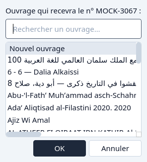
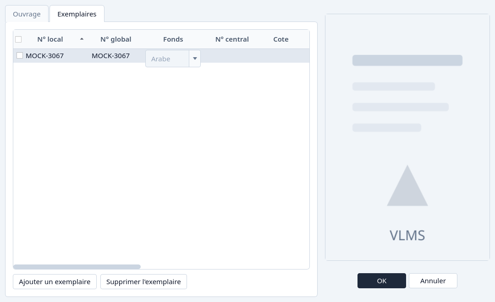

Réutiliser un numéro local
Prendre le prochain numéro, un trou libre, ou un numéro des Archives.
Un numéro local appartient à un seul exemplaire encore en service d'un fonds. Quand un exemplaire est archivé, son numéro reste sur cet exemplaire jusqu'à ce que vous le donniez à un autre. Les trous laissés par d'anciens numéros sont libres, mais l'application ne choisit jamais un trou pour vous. Elle propose d'abord le prochain numéro.
Sur un exemplaire neuf
Ouvrez l'onglet Exemplaires et cliquez Ajouter un exemplaire.
Le numéro local de la ligne neuve s'ouvre sur le prochain numéro. Les numéros libres sont dans la même liste, derrière lui. Ils ne sont utilisés que si vous en choisissez un.

Le prochain numéro, avec les numéros libres dessous. Laissez le prochain numéro, ou choisissez-en un libre, puis OK.
C'est la même fenêtre que Ajouter un ouvrage.
Depuis les Archives
Un numéro qui reste sur un exemplaire archivé se reprend depuis les Archives, et ne se tape pas par-dessus un exemplaire en service.
Ouvrez les Archives, choisissez Exemplaires, et surlignez l'exemplaire dont vous voulez le numéro.
Réutiliser le n° local est disponible quand cet exemplaire a encore un numéro local. La colonne Prêts n'a pas à être à zéro pour la réutilisation. Elle l'est pour le retrait définitif.

Exemplaires archivés, avec Réutiliser le numéro local. Cliquez Réutiliser le n° local et choisissez le titre.
La première ligne commence un ouvrage neuf. Les lignes dessous sont les titres encore en service du même fonds. Cherchez si vous voulez un titre précis.

Choisir un ouvrage neuf ou un titre déjà là pour le numéro. Confirmez avec OK. L'éditeur s'ouvre avec le numéro verrouillé sur une ligne d'exemplaire.
Pour un ouvrage neuf, remplissez le titre et la langue, puis OK. Pour un ouvrage déjà là, OK ajoute l'exemplaire. Annuler laisse l'exemplaire archivé garder son numéro.

L'éditeur ouvert par la réutilisation. L'onglet Exemplaires tient déjà le numéro.


Le numéro n'est libéré que quand cet enregistrement réussit. Un enregistrement refusé, ou Annuler, laisse les Archives comme elles étaient.